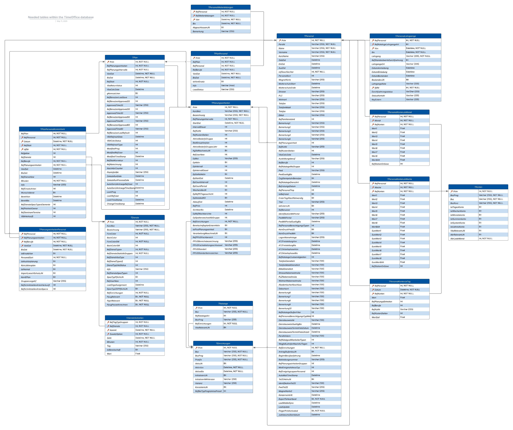

Tables
Overview of utilized Database tables¶
To get a better overlook of the referenced tables within the TIMEOFFICE database, each one is listed with a general description of its usage and all defined entries. A complete visual of the relations is shown in the picture below.
Visualization of table relations¶

TPlan¶
TPlan describes the set of working schedule managed in TIMEOFFICE. A working schedule is always assigned to a planning unit (Planungseinheit) and a time period. The time period is determined by the planning interval of the underlying planning unit.
| Attribute | Description | Data type |
|---|---|---|
| Prim | Unique numeric primary key | int |
| RefPlanungseinheiten | Reference to the underlying planning unit, TPlanungseinheiten.Prim | int |
| VonDat | Start time of planning | datetime |
| BisDat | End time of planning | datetime |
| RefStati | The status in which the work schedule is located. Reference to STStati (sic!) The most relevant statuses are 20 (TARGET), 50 (ACTUAL) and 70 (COMPLETED) or 80 (OVERDUE). Schedules in status 20 are in target planning, i.e. are currently still being planned prospectively. Plans with status 50 are in the actual planning stage; as a rule, failures are documented here and rescheduling is carried out. Plans with status 70 have been committed and can no longer be changed; status 80 indicates that a plan with status 70 has already been settled. | int |
| RefPlanungsIntervalle | The planning interval of the plan. Reference to STPlanungsIntervalle (de facto only relevant: 1 = monthly planning, 3 = annual planning) See also TPlanungseinheiten.RefPlanungsintervalle. Special: A planning unit can (and often will) have both plans with status 1 AND 3. Planning interval 3 is then the annual plan, in which long-term absence planning usually takes place. The actual work schedule then have interval 1. | int |
TPlanPersonal¶
TPlanPersonal describes the assignment of an employee to a specific work schedule.
| Attribute | Description | Data type |
|---|---|---|
| Prim | Unique numeric primary key | int |
| RefPlan | Reference to the underlying work schedule, TPlan.Prim | int |
| RefPersonal | Reference to the underlying employee, TPersonal.Prim | int |
| RefBerufe | Occupation of the employee on the plan, TBerufe.Prim | int |
| VonDat | Start of the employee's assignment, always within the plan limits | datetime |
| BisDat | End of the employee's assignment, always within the plan limits | datetime |
| IstVonErsatz | Indicator as to whether it is a substitute assignment | bit |
TPersonal¶
TPersonal describes the master data of an individual employee. #### This table contains many fields that are now obsolete.
| Attribute | Description | Data type |
|---|---|---|
| Prim | Unique numeric primary key | int |
| PersNr | Personnel number of the employee | nvarchar(255) |
| Name | Surname of the employee | nvarchar(255) |
| Vorname | First name of the employee | nvarchar(255) |
| GebDat | Date of birth of the employee | datetime |
| EinDat | Date on which the employee joined the company. Hiring date | datetime |
| AusDat | Date on which the employee leaves the company. Dismissal date | datetime |
| RefGeschlechter | Reference to STGeschlechter. 1 male, 2 female, 3 diverse. | int |
| RefFamilienstand | Marital status of the employee. Reference to TKataloge, RefKatalogArt 1 | int |
| RefBerufe | The training occupation of the employee. Reference to TBerufe. | int |
| RefEinrichtungen | The institution to which this employee is assigned. | int |
TPlanPersonalKommtGeht¶
TPlanPersonalKommtGeht describes the individual assignments of an employee on a work schedule. These are available in different statuses, so that it is possible in principle to make comparisons, e.g. between target and actual planning.
| Attribute | Description | Data type |
|---|---|---|
| RefPlan | Reference to the underlying work schedule, TPlan.Prim | int |
| RefPersonal | Reference to the underlying employee, TPersonal.Prim | int |
| Datum | The day on which the shift is performed. | datetime |
| RefStati | The status of the plan to which these "Kommt-Geht-Zeile" belong. To read the planning data from the TARGET status, the data records contained must be filtered to RefStati == 20. | int |
| LfdNr | Consecutive numbering of the assignments within the status and day of this employee | int |
| RefgAbw/RefDienste/RefDienstAbw | These three fields indicate which shift applies to the employee in the context of this "Kommt-Geht-Zeile". The logic is as follows: If an employee performs a shift and no other restrictions apply, RefServices contains the primary key of the service performed (TDienste.Prim). If a partial-day absence is planned for an employee and no other restrictions apply, RefDienstAbw contains the primary key of the absence (TDienste.Prim). If a full-day absence applies to an employee, RefgAbw is always filled with the corresponding absence shift. In addition, RefDienste OR RefDienstAbw is filled. This occurs, for example, if an employee had planned an early shift (= early shift in RefDienste), but then fell ill and a sick day was entered via the early shift (sick shift in RefgAbw) The same applies to the combination with an absence in RefDienstAbw. To simplify the interpretation, you can say: If there is something in RefgAbw, then this value applies. If there is nothing there, then you must look in RefDienstAbw. If there is nothing there either, the value must be read from RefDienste. | int |
| VonZeit | The time at which the shift begins | datetime |
| BisZeit | The time at which the shift ends | datetime |
| BereitVon | If it is an on-call duty, the duty times worked can be documented within a planned on-call duty. In these cases, ReadyFrom / ReadyTo is filled | datetime |
| BereitBis | If it is an on-call duty, the hours worked can be documented within a planned on-call duty. In these cases, ReadyFrom / ReadyTo is filled | datetime |
TPersonalKontenJeTag¶
TPersonalKontenJeTag describes the different daily account types per employee. Holiday days, night shifts and other important data can be taken from here via the external key RefPersonal (for example, the holiday as key number 85 or night shift as key 20 in the RefAccounts field).
| Attribute | Description | Data type |
|---|---|---|
| RefPersonal | Reference to the underlying employee, TPersonal.Prim | int |
| Datum | Date of the referring account | datetime |
| RefKonten | Reference to the specific account, TKonten.Prim | int |
| Wert | Count of hours within the referred account for the employee | float |
| RefPlanungsEinheiten | Reference to which planning entity the account belongs to | int |
| RefBerufe | Reference to the belonging profession | int |
| RefKstNr | Reference to the cost centre (old) | nvarchar (255) |
| RefKostenStellen | Reference to the cost centre (new) | int |
| WertSoll | The calculated VBA value of the account when the plan was < status 40 | float |
TPersonalKontenJeWoche¶
TPersonalKontenJeWoche describes the different weekly account types per employee. The count of working hours can be accessed with key 19. The count of total services can be accessed with key 67. The important value for each week is then written in column Wert2.
| Attribute | Description | Data type |
|---|---|---|
| RefPersonal | Reference to the underlying employee, TPersonal.Prim | int |
| Woche | Corresponding week of the account in the format year-week (202435) | int |
| RefKonten | Reference to the specific account, TKonten.Prim | int |
| Wert1 | Count within the referred account of the specific week in state 1 for the employee | float |
| Wert2 | Count within the referred account of the specific week in state 2 for the employee | float |
| Wert3 | Count within the referred account of the specific week in state 3 for the employee | float |
| Wert4 | Count within the referred account of the specific week in state 4 for the employee | float |
| Wert5 | Count within the referred account of the specific week in state 5 for the employee | float |
| Wert6 | Count within the referred account of the specific week in state 6 for the employee | float |
| Wert7 | Count within the referred account of the specific week in state 7 for the employee | float |
| Wert8 | Count within the referred account of the specific week in state 8 for the employee (new) | float |
| Wert8Alt | Count within the referred account of the specific week in state 8 for the employee (old) | float |
| SumWert1 | Cumulative count within the referred account of the specific week in state 1 for the employee | float |
| SumWert2 | Cumulative count within the referred account of the specific week in state 2 for the employee | float |
| SumWert3 | Cumulative count within the referred account of the specific week in state 3 for the employee | float |
| SumWert4 | Cumulative count within the referred account of the specific week in state 4 for the employee | float |
| SumWert5 | Cumulative count within the referred account of the specific week in state 5 for the employee | float |
| SumWert6 | Cumulative count within the referred account of the specific week in state 6 for the employee | float |
| SumWert7 | Cumulative count within the referred account of the specific week in state 7 for the employee | float |
| SumWert8 | Cumulative count within the referred account of the specific week in state 8 for the employee (new) | float |
| SumWert8Alt | Cumulative count within the referred account of the specific week in state 8 for the employee (old) | float |
| RefStationOnSave | Reference to the state | int |
TPersonalKontenJeMonat¶
TPersonalKontenJeWoche describes the different monthly account types per employee. The count of target working hours can be accessed with key 1 and the important value for each month is then written in column Wert2.
| Attribute | Description | Data type |
|---|---|---|
| RefPersonal | Reference to the underlying employee, TPersonal.Prim | int |
| Monat | Corresponding month of the account in the format year-month (202411) | int |
| RefKonten | Reference to the specific account, TKonten.Prim | int |
| Wert1 | Count within the referred account of the specific week in state 1 for the employee | float |
| Wert2 | Count within the referred account of the specific week in state 2 for the employee | float |
| Wert3 | Count within the referred account of the specific week in state 3 for the employee | float |
| Wert4 | Count within the referred account of the specific week in state 4 for the employee | float |
| Wert5 | Count within the referred account of the specific week in state 5 for the employee | float |
| Wert6 | Count within the referred account of the specific week in state 6 for the employee | float |
| Wert7 | Count within the referred account of the specific week in state 7 for the employee | float |
| Wert8 | Count within the referred account of the specific week in state 8 for the employee (new) | float |
| Wert8Alt | Count within the referred account of the specific week in state 8 for the employee (old) | float |
| RefStationOnSave | Reference to the state | int |
TDienste¶
TDienste describes the shifts that can be entered in the work schedule. In combination with TDiensteSollzeiten, this results in the working times scheduled for an employee.
| Attribute | Description | Data type |
|---|---|---|
| Prim | Unique numeric primary key | int |
| KurzBez | Short name of the shift | nvarchar(255) |
| Bezeichnung | Long name of the shift | nvarchar(255) |
| RefDienstTypen | Refers to the service type from STDienstTypen. 1 = normal, 100 = absence, ... | int |
| RefDiensteStatistikGruppen | Group in which a service is classified. Reference to TDiensteStatistikGruppen.Prim. Highly relevant for calculation. Classics are 1 = early shift, 2 = late shift, 3 = night shift | int |
TDiensteSollzeiten¶
TDiensteSollzeiten describes the given target times of various services. Different types become important within the internship, which can be selected using the connection to TDienste via RefDienste: Late shift (2947), early shift (2939), night shift (2953) and intermediate shift (2906). The times and breaks can be calculated via Kommt and Geht.
| Attribute | Description | Data type |
|---|---|---|
| RefTagTypGruppen | Reference to weekday | int |
| RefDienste | Reference to a specific service type | int |
| Kommt | Time when the shift starts | datetime |
| ZusatzOption | Additional information (e.g. different handling before other days) | int |
| Geht | Time when shift ends | datetime |
| Minuten | Total time in minutes | int |
| Tag | Count of total days within shift | nvarchar (255) |
| IstBereitschaft | Whether the shift is standby | bit |
| Wert | Fixed rate for standby duties | float |
TPlanungseinheiten¶
TPlanungseinheiten describe the number of possible locations of a facility. It can be imagined as a ward in a hospital where work is carried out directly.
| Attribute | Description | Datatype |
|---|---|---|
| Prim | Unique numeric primary key | int |
| KurzBez | Short name of the planning unit | nvarchar(255) |
| Bezeichnung | Long name of the planning unit | nvarchar(255) |
| RefPlannungsIntervalle | The planning interval of the planning unit. Reference to STPlanungsIntervalle (de facto only relevant: 1 = monthly planning, 3 = annual planning) | int |
| StartDat | The time at which the planning unit begins operationally. | datetime |
| RefEinrichtungen | Reference to the associated facility | int |
| IstPoolPlanungeinheit | Indicator as to whether it is a pool planning unit. Special rules apply to these, ignore for now. | bit |
| AblaufDat | Expiration date of the planning unit; set if this planning unit ceases operations at some point, NULL otherwise. | datetime |
TPlanungseinheitenPersonal¶
TPlanungseinheitenPersonal describes the assignment of employees to planning units, in the sense of: Which employee should be assigned where and when.
| Attribute | Description | Data type |
|---|---|---|
| RefPersonal | Reference to primary key TPersonal.Prim | int |
| RefPlanungseinheiten | Reference to primary key TPlanungseinheiten.Prim | int |
| RefBerufe | The activity in which the employee is assigned to this planning unit. Reference to primary key TBerufe.Prim | int |
| VonDat | From when this employee is assigned to this planning unit | datetime |
| BisDat | Until when this employee is assigned to this planning unit | datetime |
| IstVonErsatz | Indicator of whether the assignment is a substitute assignment, i.e. whether the employee was assigned as a substitute by their actual PE. | bit |
| IstHeimat | Indicator whether the assignment is to the employee's "home station". Can be understood as the "main" planning unit where the employee is also accounted for. There can only be ONE home station assignment at any given time. | bit |
TKataloge¶
| Attribute | Description | Data type |
|---|---|---|
| Prim | Unique numeric primary key | int |
| Bez | Name of the facility | nvarchar(255) |
| RefKatalogArt | The type of catalog; reference to STKatalogArten (1 = family statuses, 2 = contract types, ...) | int |
| RefEinrichtungen | The facility to which this catalog entry belongs. Refers to TEinrichtungen. | int |
TEinrichtungen¶
TEinrichtungen describes the different facilities managed in a database. These facilities exist in order to be able to logically isolate data from one another. This is done in the relevant tables via a foreign key on TEinrichtungen.Prim; the corresponding attribute is usually named RefEinrichtung. If the corresponding data is then to be read for a facility, the corresponding tables must always be read with a constraint on RefEinrichtung = [TEinrichtung.Prim].
#### There are only two facilities in the St. Marien-Krankenhaus database; facility 1 and the global facility 999. Therefore, a specific consideration of the facility structure is probably unnecessary.
| Attribute | Description | Data type |
|---|---|---|
| Prim | Unique numeric primary key | int |
| Bez | Name of the facility | nvarchar(255) |
| AktivJN | Boolflag, which indicates whether the facility is still actively in operation | bit |
| AktivVon | Spans a period in which the facility is in operation with AktivBis | datetime |
| AktivBis | Spans a period in which the facility is in operation with AktivVon | datetime |